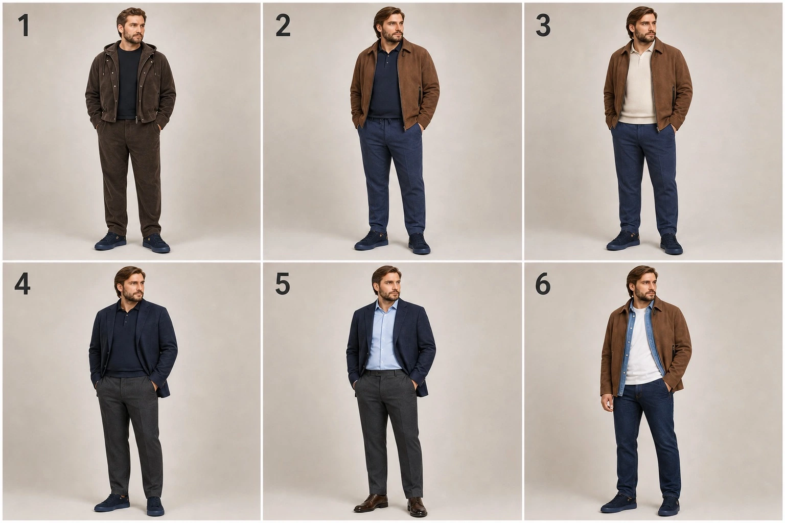

| На улице | Основная обувь | Верх | Правило |
|---|---|---|---|
| Солнце +19…+26 | Mizuno WaveKnit; синие топсайдеры с маркировкой Tod’s — только посуху | Футболка / лёгкое поло + серо-голубые chinos; Manzoni — только как снимаемый слой для помещения | ADAM SAINT и Barracuda не надевать: при +22 °C подтверждён перегрев |
| Сухо +5…+15 | Barracuda / Pollini | Коричневая куртка; пальто при +10 и ниже | Barracuda уже жаркие при +18 °C и выше |
| Ливень +6…+18 | ECCO GRUUV M GTX 525224, чёрные — план покупки | Жёлтый дождевик + тёмный зонт | До покупки пробел остаётся: Pollini — замша, чехлы только аварийно |
| Сырость +1…+5 | HENDERSON + чехлы коротко; ECCO ближе к 0 | Пальто KANZLER + зонт | Долгий мокрый маршрут пока закрыт неидеально |
| Слякоть −4…0 | ECCO Tredtray | Пальто KANZLER | ECCO начинаются с 0 °C; пуховик — только с −5 °C |
| Сухой мороз −10…−5 | Baldinini / ECCO | Пуховик KANZLER | Baldinini — сухо; ECCO — если мокро или скользко |
| Мороз −20…−11 | ECCO / Baldinini | Пуховик KANZLER | Термослой по ветру и длительности маршрута |
Спортивная свобода без вида «домашнего костюма», спокойная итальянская собранность без офисной строгости. Главные инструменты — комплект, мягкий пиджак, overshirt, поло и чистая неброская обувь.

| Группа | Что есть сейчас | Роль | Решение |
|---|---|---|---|
| Обычные футболки HENDERSON | Изношены | Только дом | Не считать выходным гардеробом и не покупать повторно из-за высокой цены |
| Белая однотонная футболка | Одна пригодная на выход; без розового принта | Под пиджак, overshirt и куртку | Оставить ключевой светлой базой |
| Cave | Цена/качество — 5; внешний вид ухудшился после машинной сушки | Временная тёмная база | Заменять постепенно новыми Cave, только один к одному; новые не сушить горячим воздухом |
| TRUE BALANCE | Недорого, но качество и впечатление «ширпотреб» | Не ядро стиля | Оставить только при безупречной посадке; иначе дом / продать / отдать |
| Реальный пробел | Почти нет свежих однотонных футболок на выход | Sport-luxe и smart casual | Нужно 3–4 свежие: navy, графит/чёрная, молочная и при необходимости вторая светлая |
| Тёплая вещь | Её отдельная роль | С чем носить | Решение |
|---|---|---|---|
| Летний пиджак Manzoni · Авито | Снимаемый слой для помещения и творческой встречи | Белая футболка / navy-поло / серо-голубые chinos | Оставить на проверку; подлинность не подтверждена |
| Navy-поло HENDERSON XXL | Главный аккуратный верх для +19…+26 °C | Серо-голубые chinos / синие топсайдеры / Pollini | Возвращено из полной карты |
| Светлый джемпер-поло KANZLER 54 | Спокойный самостоятельный верх | Синие брюки / brown chinos / Barracuda | Оставить |
| Синяя фланелевая рубашка KANZLER 44 | Рубашка-слой на выходные | Белая футболка / джинсы / коричневая куртка | Оставить |
| Фактурный джемпер на молнии KANZLER 56 | Тёплый слой под пальто | Серые брюки / джинсы / рубашка | Сравнить с гладким half-zip |
| Тёмный узорный джемпер KANZLER 56 | Самый тёплый заметный трикотаж | Однотонные серые/синие брюки / пуховик | 3 выхода; иначе продать |
| Найдено в исходной карте, но не в активном шкафу | Почему не перенесено автоматически | Следующий шаг | Статус |
|---|---|---|---|
| Поло Harmont & Blaine с длинным рукавом | Для +22 °C уже жарко; актуальность владения не подтверждена | Проверить дома и сфотографировать посадку | На сверке |
| Футболка HENDERSON Oxford 2XL | Нет уверенной актуальной фотографии | Подтвердить, что вещь осталась | На сверке |
| Коричневые chinos 54; светлые трикотажные брюки 54 | Неясно, какие реально носите сейчас | Примерить и сравнить с серо-голубыми chinos | На сверке |
| Джинсы Zileri 56 | Ранее была проблема с посадкой | Один полный день носки; оставить только при комфорте | Тест посадки |
| Два костюма HENDERSON, домашние шорты, сандалии / шлёпанцы | В карте есть упоминания, но нет надёжных актуальных фото | Подтвердить наличие; затем сделать отдельные карточки | Не потеряно, ждёт фото |
| Ветки «продать» | Не должны загромождать ежедневный выбор | Хранить отдельно от активных капсул | Не возвращать в основной экран |
| Условия | Верх | Обувь | Покрытие |
|---|---|---|---|
| +19…+26 · сухо / солнце | Футболка или лёгкое поло; без куртки | Mizuno WaveKnit; синие топсайдеры с Авито — после теста комфорта | Закрыто летними вещами |
| +16…+18 · дождь | Жёлтый дождевик + зонт | Чехлы аварийно; лёгкой waterproof-пары нет | Условный пробел |
| +10…+15 · сухо / дождь | Коричневая куртка / дождевик / зонт | Сухо — Barracuda/Pollini; дождь — купить ECCO GRUUV M GTX 525224 | Пробел до покупки |
| +5…+9 · прохладно | Куртка / пальто; трикотаж под дождевик | Barracuda / Pollini / HENDERSON | Закрыто с запасом |
| +1…+4 · холодная сырость | Пальто KANZLER + зонт | HENDERSON + чехлы коротко; отдельная waterproof-пара — для долгого маршрута | Долгий дождь закрыт условно |
| 0…−4 · слякоть | Пальто KANZLER | ECCO Tredtray | Закрыто |
| −5…−10 · мороз | Пуховик KANZLER | Baldinini сухо / ECCO мокро | Закрыто |
| −11…−20 · сильный мороз | Пуховик + термослой | ECCO / Baldinini | Закрыто |